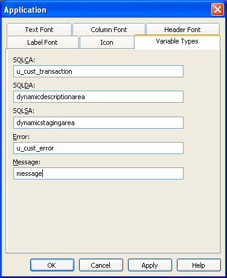

Once you have built a user object, you are ready to use it in an application. This section describes how to use:
You use visual user objects by placing them in a window or in a custom visual user object. The techniques are similar whether you are working in the Window painter or the User Object painter.
 To place a user object:
To place a user object:
Open the window or custom visual user object in which you want to place the visual user object.
Click the User Object button in the PainterBar, or select Insert>Control from the menu bar and then select User Object.
Select the user object you want to use and click the location where you want the user object to display.
PowerBuilder creates a descendent user object that inherits its definition from the selected user object and places it in the window or user object.
 Dragging the user object from the System Tree You can drag a user object from the System Tree to the Layout
view in the Window painter.
Dragging the user object from the System Tree You can drag a user object from the System Tree to the Layout
view in the Window painter.
After you place a user object in a window or a custom visual user object, you can name it, size it, position it, write scripts for it, and do anything else you can do with a control.
When you place the user object in a window, PowerBuilder assigns it a unique name, just as it does when you place a control. The name is a concatenation of the default prefix for a user object control (initially, uo_) and a default suffix, which is a number that makes the name unique.
You should change the default suffix to a suffix that has meaning for the user object in your application.
For more information about naming, see "Naming controls ".
When you place a user object in a window or a custom user object, you are actually creating a descendant of the user object. All scripts defined for the ancestor user object are inherited. You can choose to override or extend those scripts.
For more information, see "Using inherited scripts ".
You place a user object as a unit in a window (or another user object). You cannot write scripts for individual controls in a custom user object after placing it in a window or custom user object; you do that only when you are defining the user object itself.
You can add a user object to a window at runtime using the PowerScript functions OpenUserObject and OpenUserObjectWithParm in a script. You can remove a user object from a window using the CloseUserObject function.
There are two ways to use a class user object when the user object is not autoinstantiating: you can create an instance of it in a script, or you can insert the user object in a window or user object using the Insert menu.
For more information on autoinstantiation, see "Using AutoInstantiate".
The nonvisual object you insert can be a custom class user object or a standard class user object of most types.
 To instantiate a class user object:
To instantiate a class user object:
In the window or user object in which you want to use the class user object, declare a variable of the user object type and create an instance of it using the CREATE statement. For example:
// declared instance variable:
// n_myobject invo_myobject
invo_myobject = CREATE n_myobject
Use the user object's properties and functions to do the required processing.
When you have finished using the user object, destroy it using the DESTROY statement.
If you select Autoinstantiate in the properties of the class user object, you cannot use the CREATE and DESTROY statements.
 To insert a class user object:
To insert a class user object:
Open the window or user object in which you want to insert the class user object.
Select Insert>Object from the menu bar.
Select User Object (at the bottom of the list) and then select the class user object you want to insert.
PowerBuilder inserts the selected class user object.
Modify the properties and code the events of the nonvisual object as needed.
When the user object is created in an application, the nonvisual object it contains is created automatically. When the user object is destroyed, the nonvisual object is destroyed automatically.
You can use the same technique to insert standard class user objects. Since all class user objects are nonvisual, you cannot see them, but if you look at the Non-Visual Object List view, you see all the class user objects that exist in your user object.
Using the Non-Visual Object List view's pop-up menu, you can display a class user object's properties in the Properties view, display the Script view for the object to code its behavior, or delete the object.
Five of the standard class user object types are inherited from predefined global objects used in all PowerBuilder applications:
If you want your standard class user object to replace the built-in global object, you tell PowerBuilder to use your user object instead of the built-in system object that it inherits from. You will probably use this technique if you have built a user object inheriting from the Error or Message object.
 To replace the built-in global object with a standard
class user object:
To replace the built-in global object with a standard
class user object:
Open the Application object.
In the Properties view, click the Additional Properties button on the General tab page.
In the Application properties dialog box, select the Variable Types tab.
Specify the standard class user object you defined in the corresponding field and click OK.

After you have specified your user object as the default global object, it replaces the built-in object and is created automatically when the application starts up. You do not create it (or destroy it) yourself.
The properties and functions defined in the user object are available anywhere in the application. Reference them using dot notation, just as you access those of other PowerBuilder objects such as windows.
You can use a user object inherited from one of these global objects by inserting one in your user object as described in "Using class user objects". If you do, your user object is used in addition to the built-in global object variable. Typically you use this technique with user objects inherited from the Transaction object. You now have access to two Transaction objects: the built-in SQLCA and the one you defined.
For more information about using the Error object, see "Using the Error object".
For information about using the Message object, and about creating your own Transaction object to support database remote procedure calls, see Application Techniques .
For more information about the DynamicDescriptionArea and DynamicStagingArea objects used in dynamic SQL, see the PowerScript Reference .